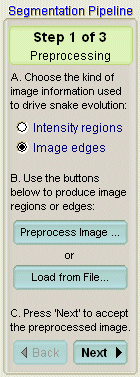
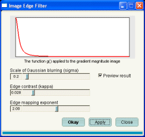
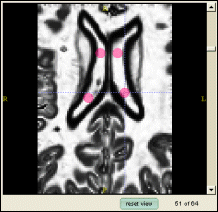
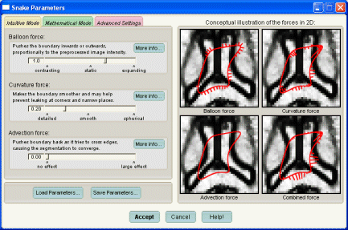
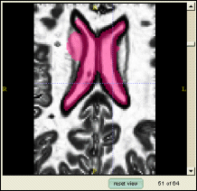
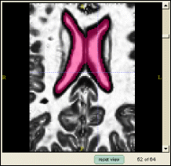

Discard the previous segmentation. Refer to Step 1 in Section 6 for instructions.
This section assumes that the reader has competed the region
competition based segmentation tasks in the previous section. The
instructions offered in this section are less detailed than previous
sections, since the reader would have gained sufficient experience
using the tool in the preceding sections.
The first task in this section is to use edge-based snakes to segment the ventricles in our image. In this step we will perform the preliminary tasks: clearing the previous segmentation, selecting the appropriate label and entering SNAP mode.
|
Discard the previous segmentation. Refer to Step 1 in Section 6 for instructions. |
|
Set 'Ventricles' as the active drawing label and set the Draw Over mode to 'All labels'. Refer to Step 2 in Section 6 for instructions. |
|
Select the snake tool in the IRIS toolbox Position the 3D selection box to include the ventricles Press the Segment 3D to enter the automatic segmentation mode. The above tasks are described in Step 3 in Section 6 |
At this point, you should be in the automatic segmentation mode of SNAP, on step 1 of the segmentation pipeline
In this step we will compute the feature image that assigns near-zero values to the pixels close to intensity edges in the grey image and assigns values close to one to regions of uniform intensity
First let's tell SnAP which type of the feature image we will be using:
|
Select the option Image Edges in the section A of the Segmentation Pipeline Wizard. |

|
Press the button labeled Preprocess Image.... The Image Edge Filter window will appear: |

This window is used to specify how intensity edges are used in constructing the feature image (this construction was outlined in Section 5, Step 2). There are three parameters that you can set in this window: scale of Gaussian blurring, edge contrast and edge mapping exponent.
The scale of Gaussian blurring describes how much the greyscale image is blurred before the edges in the image are calculated. At small values of the blurring scale all of the edges in the image will be used in constructing the feature image, which can lead to a prevalence of noisy edges, i.e., intensity discontinuities that do not correspond to boundaries between anatomical structures. For the larger blurring scales, only the most prevalent intensity edges become visible in the feature image, but fine-scale qualities of edges become lost. The selection of the blurring scale is a careful process where a tradeoff is made between too much noise and too little detail. Luckily, the edges between the ventricles and the surrounding tissues are very conspicuous and 'survive' a significant amount of blurring.
The other two parameters, the edge contrast and edge mapping exponent, determine the shape of the curve shown in the above window. This curve is used to map edge stregth to feature image values. The steeper the curve, the greater the contrast between flat regions and edges. Remember that the speed of snake propagation at a point is proportional to the value of the feature image at that point.
|
On a fast computer it is advisable to check the Preview result checkbox in order to receive live feedback as you change the parameters in the Image Edge Filter window. |
|
Set the 'Scale of Gaussian Blurring' to 0.6 Set the 'Edge Contrast' value to 0.030 Keep the 'Edge Mapping Exponent' value at 2.0 Press Okay to compute the feature image |
After this step, the SNAP window should look like this:

In this step we will initialize the snake using bubbles which will grow to assume the shape of the vertricles. When initializing edge based snakes, it is improtant to keep the bubbles entirely within the structure that we are interested in segmenting. Bubble placement for region-competition based feature images was described in Section 6, Step 4..
|
Press the Next buttor to proceed to the next stage of automatic segmentation: 'Step 2. Snake Initialization' |
|
Set the bubble radius to 3 Place four bubbles inside of the lateral ventricles in the axial view, as illustrated below: |

In this step we will experiment with the parameters used for edge-based segmentation.
|
Press the Next buttor to proceed to the next stage of automatic segmentation: 'Step 3. Segmentation' Press the Set Parameters... button to bring up the parameter selection window. |
We will begin by experimenting with snake evolution with the advection force turned off. You will see how without this force the snake is likely to 'leak' pas the boundaries of the ventricles
|
Set the 'Balloon Force' to 1.0 Set the 'Curvature Force' to 0.2 Set the 'Advection Force' to 0.0 Accept the new parameter settings. |

|
Run the snake evolution using the button with the 'Play' (triangle) symbol As the snake leaks past the boundaries of the ventricles, press the button with the 'Stop' (square) symbol |

The leaking occurs because the balloon force acts outwards with a strength proportional to the value of the feature image. Since the feature image is positive, the balloon force never stops acting, so the snake never stops growing. Luckily, the advection force can be used to get the snake to stop. The advection force acts inwards when the snake crosses an edge and keeps the snake from expanding further
|
Rewind the segmentation using the button with the Rewind (pair of triangles facing left) symbol. Bring up the parameter selection window Set the advection force to 5.0 and press Accept Run the snake evolution again, stopping it after a 1000 iterations or so. |
This time the snake does not leak!

|
Experiment with different values of the ballon, curvature and advection forces. What are the values ideal for segmenting the ventricles? |
|
Try recomputing the feature image using different parameters, such as a smaller scale of Gaussian blurring. You should be able to get a better segmentation than before. |
By now you have mastered the most important features of SNAP!
|
Experiment with segmenting other structures in the brain. For example, it's possible to segment the caudates using edge-based snakes. Even the hippocampus can be partially segmented, but extensive manual post-processing will be necessary. |